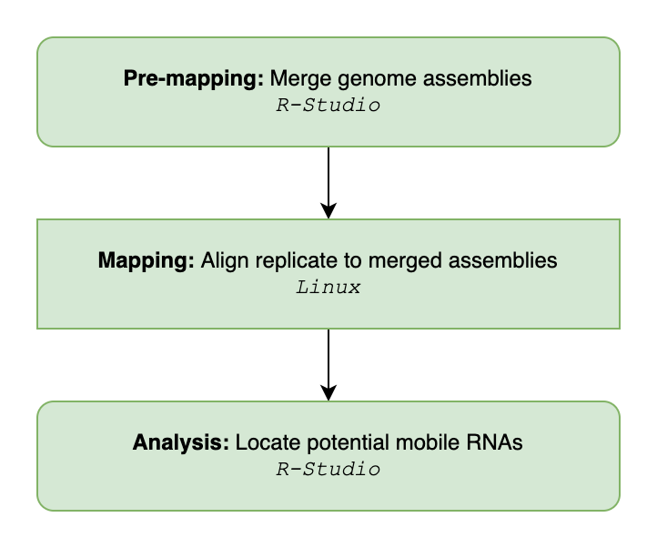

Overview
mobileRNA is an R package that provides a pipeline for the rapid identification of endogenous mobile RNA molecules in plant graft systems. The tool provides a pipeline for pre-processing and analysis of sRNA sequencing data, and soon mRNA sequencing data.
It has been established that many different substances and molecules including RNAs can travel across the graft junction. Plant heterograft systems are comprised of two genotypes joined at the graft junction; hence, molecules produces and encoded by each genotype can move across the graft junction and be exchanged. These molecules could have implications to the regulation of gene expression and trait acquisition.
Current methods utilise a step-wise mapping of samples to each genome within the graft system. While, here we introduce a new mapping method where we align each sample replicates to a merge genome reference comprised of both genome assemblies relating to the genotypes in the heterograft system.
Author
Katie Jeynes-Cupper, University of Birmingham, kej031@student.bham.ac.uk
Installation
The latest version of the package can be install directly from this GitHub repo:
if (!require("devtools")) install.packages("devtools")
devtools::install_github("KJeynesCupper/mobileRNA", branch = "main")Loading test data
To simulate the usage of the package, there is a grafting data set, from a tomato-eggplant grafting experiment. The data has already undertaken the pre-mapping and mapping steps (pre-processing) and can be found here sRNA_data. The data set has already been organised by the RNAimport() function available in the package.
To load the data set, use the following command:
data("sRNA_data")Getting help
For additional information on each function, please read through the documentation in the mobileRNA package by typing the ? help operator before any of the function names in the package or by using the help() function.
For an in-depth step-by-step analysis, consider reading the vignette provided with this package:
vignette("mobileRNA")Summary

The workflow is shown in the figure to the right. It begin in R-Studio to merge the two genome assemblies into one, then the pre-processing moves into Linux to align each replicate to the merged reference and then back into R-Studio to undertake the analysis to identify potentially mobile RNA species.
Pre-mapping
Raw fastq files should be trimmed to remove adapter sequences and low quality reads as per best practice. We recommend installing the ShortStack (https://github.com/MikeAxtell/ShortStack) program to align and cluster sRNA-seq samples. The program is formulated for sRNA-seq analysis, utilising Bowtie and an custom clustering algorithm.
Here, we introduce a mapping method utilising a merged genome reference, comprised of both genome assemblies relating to the genotypes in the heterograft system.
mobileRNA offers a function to merge two FASTA reference genomes into one. To ensure the two genomes are distinguishable within the merged file, the function added a prefix to each chromosome name. As standard, the string “A_” is added to the reference genome supplied to “genomeA” and “B_” is added to the reference genome supplied to “genomeB”. These can be customised to the users preference, see manual for more information.
merged_reference <- RNAmergeGenomes(genomeA = "./workplace/reference/ref1.fa",
genomeB = "./workplace/reference/ref2.fa",
out_dir = "./workplace/reference/merge/merged_ref.fa")Mapping: sRNA-seq data with ShortStack
Here, we recommend a double-mapping process using ShortStack, the steps are as follow:
Step 1 - Identify loci of dicer-derived sRNA cluster in each sample
ShortStack \
--readfile <control_1.fastq> \
--genomefile <merged_reference.fa> \
--bowtie_cores 6 \
--mmap n \
--mismatches 0 \
--nohp \
--outdir <./output/directory>Step 2 - Uniquely map samples to all loci of identified sRNA clusters
Using the output from Step 1, the RNAloci() function can collate all the loci information into a single .txt file which can be utilised by ShortStack in the finally mapping step to the locifile argument.
folder <- <./output/directory/from/step/1/>
save_folder <- <./output/directory/ClustersInfo.txt>
sample_names <- c("<treatment_1>", "<treatment_2>", "<control_1>","<control_2>")
loci_info <- RNAloci(files = folder,
out = save_folder,
samples = sample_names)Each sample is mapped to the merged reference genome with the annotation file containing the cluster loci to analyse.
ShortStack \
--readfile <control_1.fastq> \
--genomefile <merged_reference.fa> \
--locifile <./output/directory/ClustersInfo.gff3> \
--bowtie_cores 6 \
--mmap n \
--mismatches 0 \
--nohp \
--mincov 5 \
--outdir <./output/directory/step2/>Post-mapping analysis
The aligned data can now be analysed in R, and potential mobile sRNA can be identified.
Step 1: Import data
State the location of the mapping results, the sample names and sRNA cluster loci annotation file.
# Directory containing results
results_dir <- "<./output/directory/step2/>"
# Sample names and total number of reads, in the same order.
sample_names <- c("<treatment_1>", "<treatment_2>", "<control_1>","<control_2>")
sRNA_data <- RNAimport(directory = results_dir,
samples = sample_names)
Step 2: Calculate the consensus of each sRNA cluster
For a given sRNA cluster, each replicate has determined the class (20-24nt) based on the most abundant small RNA size. Replicates within the same condition are expected to class a given sRNA similarly.
The RNAconsensus() function is used to define the class of a sRNA cluster based on the consensus across specific replicates. To identify forigen mobile sRNAs, it is recommended to base the consensus call on the heterograft samples. This will ensure that the sRNA class is more accurately defined by the genotype it originates from.
Below, replicates “treatment_1” and “treatment_2” represent two heterograft samples, while “control_1” and “control_2” represent self-graft samples.
samples <- c("<treatment_1>", "<treatment_2>")
sRNA_data_summary <- RNAconsensus(data = sRNA_data,
conditions = samples,
tidy=TRUE)Step 3: Identify potential mobile sRNA
Finally, the RNAmobile() function filters the dataset to retain the sRNA clusters mapped to the A-genome. It is important, that each genome is distinguishable by the chromosome names, hence, in this example the A-genome contains “A” before the chromosome number.
# define control samples
controls <- c("<control_1>", "<control_2>")
mobile <- RNAmobile(data = sRNA_data_summary,
controls = controls,
id = "A",
task = "keep")
# output dataframe containing potentially mobile sRNAs
output <- mobile
# save output as txt file
write.table(output, "./output.txt")Output
A dataframe where rows represent potential mobile sRNA clusters. The columns include information on the cluster, individual sample replicates, and more.
Information on the cluster:
-
chr: Name of the chromosome or scaffold -
start: Start position of the cluster -
end: End position of the cluster -
width: Length of the locus (base-pairs)
Information on each sample replicate:
-
cluster: Cluster Name -
Dicer-call: The size of most abundant small RNA size -
Count: Number of uniquely aligned (e.g. not multi-mapping) reads that overlap this locus. -
RPM: Reads per Million
Other information
-
sRNA_Consensus: Consensus sRNA class calculated byRNAconsensus()
If an annotation file was imported and overlapped using RNAattributes():
-
source: name of the program that generated this feature, or the data source (database or project name) -
feature: feature type name, e.g. Gene, Variation, Similarity -
score: A floating point value -
strand: defined as + (forward) or - (reverse) -
frame: One of ‘0’, ‘1’ or ‘2’. ‘0’ indicates that the first base of the feature is the first base of a codon, ‘1’ that the second base is the first base of a codon, and so on -
attribute: A semicolon-separated list of tag-value pairs, providing additional information about each feature.
If differential expression analysis was undertaken withRNAanalysis():
-
log2FoldChange: Log2FoldChange–The effect size estimate -
pvalue: P value, the probability under the assumption of no effect or no difference, of obtaining a result equal to or more extreme than what was actually observed -
padjusted: A p-value adjustment -
logCPM: log counts per million, measure of expression level
If the mean RPM and Count was calculated RNAmean(): - mean_RPM : mean RPM, based on parameters - mean_Count : mean counts, based on parameters
Optional extras and additional applications
The package also includes functions for:
- Exploratory and quality control analysis, such as PCA & heatmap plots.
- Summary values including RPM mean and Count mean across specific samples.
- Plot the distribution of sRNA classes (20-24nt) across indivudal replicates or across the dataset.
- Statistical analysis using differential methods from either DESeq2 or edgeR.
- Functional analysis to identify potential target sequences in the destination tissue
The package workflow can easily be manipulated to enable the identification of local populations of RNA species.
Last updated: 06-06-2023